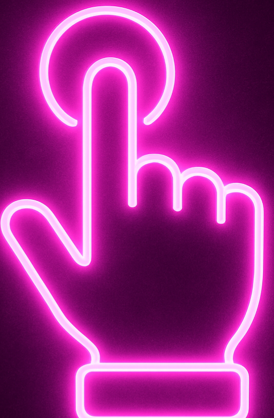

A period of time off from work, school, or daily routine for rest or travel. It often refers to official public days off (mainly in British English).
During the Christmas , many people visit home or enjoy seasonal festivals with family.
Example: During the Christmas holiday, many people visit home or enjoy seasonal festivals with family.
A period of time off from work, school, or daily routine for rest or travel. It usually means personal leisure time or trips (mainly in American English).
I'm taking a two-week to explore the beaches of Costa Rica and unwind.
Example: I'm taking a two-week vacation to explore the beaches of Costa Rica and unwind.
A place where travellers stay temporarily, usually offering private rooms and hotel services.
We booked a room at a close to the city center for convenience.
Example: We booked a room at a hotel close to the city center for convenience.
An affordable, shared accommodation option popular with budget travellers and backpackers.
During my trip to Europe, I stayed at a to meet other travellers.
Example: During my trip to Europe, I stayed at a hostel to meet other travellers.
Bags and suitcases that people carry when travelling.
Make sure your fits within the airline’s size and weight limits to avoid extra fees.
Example: Make sure your luggage fits within the airline’s size and weight limits to avoid extra fees.
A large rectangular bag with a handle and wheels for carrying clothes and personal items on trips.
I packed my clothes in a that fits perfectly in the overhead bin.
A large rectangular bag with a handle and wheels for carrying clothes and personal items on trips.
Example: I packed my clothes in a suitcase that fits perfectly in the overhead bin.
A popular place that attracts many visitors for its cultural, historical, or natural significance.
We spent the day visiting the city's main , including museums and gardens.
A popular place that attracts many visitors for its cultural, historical, or natural significance.
Example: We spent the day visiting the city's main tourist attractions, including museums and gardens.
To arrange in advance for a hotel, flight, or restaurant spot.
Don’t forget to ahead of time to avoid last-minute issues.
To arrange in advance for a hotel, flight, or restaurant spot.
Example: Don’t forget to make a reservation ahead of time to avoid last-minute issues.
The process of registering at a hotel or airport upon arrival.
Passengers should at least two hours before the flight.
The process of registering at a hotel or airport upon arrival.
Example: Passengers should check in at least two hours before the flight.
The process when a guest leaves a hotel, pays any remaining bills, and returns the room keys before departing. It marks the end of the stay at the hotel.
We need to complete our before 11 AM at the hotel.
The process when a guest leaves a hotel, pays any remaining bills, and returns the room keys before departing. It marks the end of the stay at the hotel.
Example: We need to complete our check-out before 11 AM at the hotel.
The act of paying bills or clearing any outstanding charges, often done upon leaving a place.
Before leaving, please your at the reception.
The act of paying bills or clearing any outstanding charges, often done upon leaving a place.
Example: Before leaving, please settle your accounts at the reception.
A form of low-cost, independent travel where a person carries all their necessary belongings in a backpack, often travelling to multiple places on a budget and staying in inexpensive accommodations.
She spent six months through Southeast Asia, staying in hostels and exploring local culture.
A form of low-cost, independent travel where a person carries all their necessary belongings in a backpack, often travelling to multiple places on a budget and staying in inexpensive accommodations.
Example: She spent six months backpacking through Southeast Asia, staying in hostels and exploring local culture.
A trip on a large ship for leisure, often visiting multiple destinations.
For our anniversary, we booked a two-week around the Mediterranean.
A trip on a large ship for leisure, often visiting multiple destinations.
Example: For our anniversary, we booked a two-week cruise around the Mediterranean.
A trip guided by an expert who provides information about places visited.
We joined a to learn more about the city's history and culture.
A trip guided by an expert who provides information about places visited.
Example: We joined a guided tour to learn more about the city's history and culture.
A short trip or journey, usually for pleasure, education, or exploration, often organized for a group of people.
We took an to the nearby waterfalls during our mountain stay.
A short trip or journey, usually for pleasure, education, or exploration, often organized for a group of people.
Example: We took an excursion to the nearby waterfalls during our mountain stay.
The essential facilities and services needed for a place to function well, like transport and electricity.
Good makes travelling in the city very convenient.
The essential facilities and services needed for a place to function well, like transport and electricity.
Example: Good infrastructure makes travelling in the city very convenient.
The natural elements and features of a landscape or environment that are visible, such as mountains, trees, rivers, and other outdoor views, which together create a particular visual setting.
The hiking trail offers stunning of the surrounding mountains.
The natural elements and features of a landscape or environment that are visible, such as mountains, trees, rivers, and other outdoor views, which together create a particular visual setting.
Example: The hiking trail offers stunning scenery of the surrounding mountains.
An amazing view that leaves a strong impression because of its beauty.
The hotel room had a of the ocean at sunrise.
An amazing view that leaves a strong impression because of its beauty.
Example: The hotel room had a breathtaking view of the ocean at sunrise.
A place or view that is charming and visually attractive like a picture.
We found a village that's perfect for taking photos.
A place or view that is charming and visually attractive like a picture.
Example: We found a picturesque village that's perfect for taking photos.
A term that refers to the things, traditions, and special items from the past that people preserve and pass down due to their significance.
Walking through the old town offers a glimpse into the of the city's early settlers and their traditional building styles.
A term that refers to the things, traditions, and special items from the past that people preserve and pass down due to their significance.
Example: Walking through the old town offers a glimpse into the heritage of the city's early settlers and their traditional building styles.
The active experience of living in and engaging with a different culture to deeply understand its customs, language, and daily life.
Volunteering in rural communities is a great way to achieve and broaden your perspective.
The active experience of living in and engaging with a different culture to deeply understand its customs, language, and daily life.
Example: Volunteering in rural communities is a great way to achieve cultural immersion and broaden your perspective.
A list of experiences or goals someone wants to achieve in their lifetime.
Visiting Iceland is at the top of my for next year.
A list of experiences or goals someone wants to achieve in their lifetime.
Example: Visiting Iceland is at the top of my bucket list for next year.
Related to or occurring during a particular season of the year.
The holiday sales always bring great deals on gifts and decorations.
Related to or occurring during a particular season of the year.
Example: The seasonal holiday sales always bring great deals on gifts and decorations.
A detailed plan or schedule of a journey, specifying the destinations to be visited and the times of each visit.
A detailed helps travellers manage their time effectively and avoid missing important engagements.
A detailed plan or schedule of a journey, specifying the destinations to be visited and the times of each visit.
Example: A detailed itinerary helps travellers manage their time effectively and avoid missing important engagements.
The planning and organizing of transportation, accommodation, and logistics necessary for a trip to ensure it is smooth and efficient.
Before the conference, she confirmed her to avoid any last-minute issues.
The planning and organizing of transportation, accommodation, and logistics necessary for a trip to ensure it is smooth and efficient.
Example: Before the conference, she confirmed her travel arrangements to avoid any last-minute issues.
A place where people travel to spend their vacation, often chosen for relaxation, sightseeing, or recreation.
Adventure lovers look for where they can try zip-lining, scuba diving, or mountain biking.
A place where people travel to spend their vacation, often chosen for relaxation, sightseeing, or recreation.
Example: Adventure lovers look for holiday destinations where they can try zip-lining, scuba diving, or mountain biking.
A pre-arranged holiday organized by a travel company, including transportation, accommodation, and sometimes meals or activities, sold as a single combined price.
Many travellers book eco-friendly that include sustainable accommodations and nature activities.
A pre-arranged holiday organized by a travel company, including transportation, accommodation, and sometimes meals or activities, sold as a single combined price.
Example: Many travellers book eco-friendly package holidays that include sustainable accommodations and nature activities.
Places or locations known for being low-cost or budget-friendly to visit, where travellers can enjoy experiences such as accommodation, food, transport, and activities without spending a lot of money.
Thailand is one of the most popular for young travellers.
Places or locations known for being low-cost or budget-friendly to visit, where travellers can enjoy experiences such as accommodation, food, transport, and activities without spending a lot of money.
Example: Thailand is one of the most popular affordable destinations for young travellers.
A type of lodging that offers overnight accommodation and a morning meal, usually in a small, charming, and often family-run setting, providing a more personalized and cozy experience compared to hotels.
We stayed at a charming in the countryside.
A type of lodging that offers overnight accommodation and a morning meal, usually in a small, charming, and often family-run setting, providing a more personalized and cozy experience compared to hotels.
Example: We stayed at a charming bed and breakfast in the countryside.
A type of insurance that provides financial protection against unexpected events or losses during a trip, such as medical emergencies, trip cancellations, lost luggage, or travel delays.
Travellers who book last-minute trips often buy with "Cancel for Any Reason" coverage, which gives them flexibility to cancel their trip and get partial refunds.
A type of insurance that provides financial protection against unexpected events or losses during a trip, such as medical emergencies, trip cancellations, lost luggage, or travel delays.
Example: Travellers who book last-minute trips often buy travel insurance with "Cancel for Any Reason" coverage, which gives them flexibility to cancel their trip and get partial refunds.
Extremely comfortable and expensive, offering high-quality services and facilities.
We treated ourselves to a resort for our honeymoon.
Extremely comfortable and expensive, offering high-quality services and facilities.
Example: We treated ourselves to a luxurious resort for our honeymoon.
The time of year when a travel destination experiences the highest number of visitors, often leading to higher prices for accommodations and activities, as well as crowded attractions.
Adventure seekers often embrace to enjoy festivals and outdoor sports events that only happen during this high-demand period.
The time of year when a travel destination experiences the highest number of visitors, often leading to higher prices for accommodations and activities, as well as crowded attractions.
Example: Adventure seekers often embrace peak season to enjoy festivals and outdoor sports events that only happen during this high-demand period.
A place popular with tourists but known for overpriced goods, services, or attractions that may offer less value or authenticity than expected.
Many travellers avoid by researching local hidden gems through social media and travel apps.
A place popular with tourists but known for overpriced goods, services, or attractions that may offer less value or authenticity than expected.
Example: Many travellers avoid tourist traps by researching local hidden gems through social media and travel apps.
To pack only the essential items for a trip in order to move easily and avoid heavy luggage.
Influencers often share tips on how to while still packing stylish and versatile outfits for different occasions.
To pack only the essential items for a trip in order to move easily and avoid heavy luggage.
Example: Influencers often share tips on how to travel light while still packing stylish and versatile outfits for different occasions.
A flight lasting more than 6-7 hours, typically covering long distances such as international or intercontinental routes.
Many modern travellers prepare carefully for by packing noise-canceling headphones and comfortable travel clothes.
A flight lasting more than 6-7 hours, typically covering long distances such as international or intercontinental routes.
Example: Many modern travellers prepare carefully for long-haul flights by packing noise-canceling headphones and comfortable travel clothes.
A flight lasting a short duration, usually under 3 hours, often covering domestic or nearby international routes.
Weekend getaway seekers often book to escape crowded cities without long travel times.
A flight lasting a short duration, usually under 3 hours, often covering domestic or nearby international routes.
Example: Weekend getaway seekers often book short-haul flights to escape crowded cities without long travel times.
A person who frequently plans or takes short trips or vacations during the weekend to relax, explore, or escape from everyday life.
enjoy spontaneous short trips to recharge, especially in today’s fast-paced lifestyle.
A person who frequently plans or takes short trips or vacations during the weekend to relax, explore, or escape from everyday life.
Weekend getaway seekers enjoy spontaneous short trips to recharge, especially in today’s fast-paced lifestyle.
Failing to catch a plane because of arriving late, delays in security, traffic, or other unforeseen circumstances, resulting in being unable to board the scheduled flight.
Many travellers set multiple alarms to avoid due to arriving late at the airport.
Failing to catch a plane because of arriving late, delays in security, traffic, or other unforeseen circumstances, resulting in being unable to board the scheduled flight.
Example: Many travellers set multiple alarms to avoid missing a flight due to arriving late at the airport.
A temporary condition that occurs when your body's internal clock is out of sync with the new time zone after quickly travelling across multiple time zones, causing symptoms like tiredness, trouble sleeping and irritability.
Adventure seekers embrace recovery as part of the experience when reaching remote destinations.
A temporary condition that occurs when your body's internal clock is out of sync with the new time zone after quickly travelling across multiple time zones, causing symptoms like tiredness, trouble sleeping and irritability.
Example: Adventure seekers embrace jet lag recovery as part of the experience when reaching remote destinations.
A flight that departs late at night (usually after 9 PM) and arrives early the next morning, often causing passengers to have tired, red eyes due to lack of sleep during overnight travel.
Managing sleep on a with a neck pillow and eye mask helps reduce fatigue upon arrival.
A flight that departs late at night (usually after 9 PM) and arrives early the next morning, often causing passengers to have tired, red eyes due to lack of sleep during overnight travel.
Example: Managing sleep on a red-eye flight with a neck pillow and eye mask helps reduce fatigue upon arrival.
An airline that offers cheaper ticket prices by minimizing operating costs and providing fewer amenities, often charging extra for services like checked baggage or seat selection.
Some now offer premium options to cater to business travellers seeking comfort at a lower price.
An airline that offers cheaper ticket prices by minimizing operating costs and providing fewer amenities, often charging extra for services like checked baggage or seat selection.
Example: Some low-cost airlines now offer premium options to cater to business travellers seeking comfort at a lower price.
To sit in the front passenger seat of a vehicle, typically next to the driver, often indicating a preferred or desirable position during a car trip.
Whenever we travel together, he insists on to control the music.
To sit in the front passenger seat of a vehicle, typically next to the driver, often indicating a preferred or desirable position during a car trip.
Example: Whenever we travel together, he insists on riding shotgun to control the music.
To begin a journey or start travelling, often with a specific destination or goal in mind.
They to explore the city.
To begin a journey or start travelling, often with a specific destination or goal in mind.
Example: They set out to explore the city.
To begin a journey or start travelling, often emphasizing the moment of departure or starting to move.
We early in the morning to avoid traffic.
To begin a journey or start travelling, often emphasizing the moment of departure or starting to move.
Example: We set off early in the morning to avoid traffic.
A planned break during a journey, especially on a flight, where passengers stay at an intermediate destination for a certain period before continuing to their final destination.
Many travellers choose flights with a to explore a new city without booking a separate trip.
A planned break during a journey, especially on a flight, where passengers stay at an intermediate destination for a certain period before continuing to their final destination.
Example: Many travellers choose flights with a stopover to explore a new city without booking a separate trip.
To take a short break during a journey, especially when travelling by car, to rest, refuel, eat, or use restroom facilities before continuing on.
During our road trip, we at a small diner to stretch our legs and grab some coffee.
To take a short break during a journey, especially when travelling by car, to rest, refuel, eat, or use restroom facilities before continuing on.
Example: During our road trip, we made a pit stop at a small diner to stretch our legs and grab some coffee.
To go to the place where someone is leaving (such as an airport, train station, or bus terminal) to say goodbye and wish them well on their journey.
It’s common to see emotional goodbyes when people their family members at train stations.
To go to the place where someone is leaving (such as an airport, train station, or bus terminal) to say goodbye and wish them well on their journey.
Example: It’s common to see emotional goodbyes when people see off their family members at train stations.
To cancel an event, plan, or activity that was previously scheduled.
Due to the storm, many travellers had to their weekend getaway plans.
To cancel an event, plan, or activity that was previously scheduled.
Example: Due to the storm, many travellers had to call off their weekend getaway plans.
To leave a place and start travelling (especially by car).
He always feels excited when it’s time to for a weekend adventure.
To leave a place and start travelling (especially by car).
Example: He always feels excited when it’s time to hit the road for a weekend adventure.
To take someone or something to a particular place and leave them there, typically by vehicle, such as leaving passengers at their stop, unloading luggage at a destination, or delivering goods.
I will him at the airport.
To take someone or something to a particular place and leave them there, typically by vehicle, such as leaving passengers at their stop, unloading luggage at a destination, or delivering goods.
Example: I will drop him off at the airport.
To go somewhere to get or collect a person, luggage, items, or parcels and take them to another place.
I will you at the airport exit when your plane lands.
To go somewhere to get or collect a person, luggage, items, or parcels and take them to another place.
Example: I will pick you up at the airport exit when your plane lands.
To escape or take a break from daily routine, work, or stressful situations, often by going on a short trip or vacation.
Example 1: I need to for a few days. Example 2: She wants to and unwind by the sea.
To escape or take a break from daily routine, work, or stressful situations, often by going on a short trip or vacation.
Example 1: I need to get away for a few days. Example 2: She wants to get away from it all and unwind by the sea.
To explore or examine the surroundings or area, often casually or to get familiar with a new place.
When you move to a new city, it’s helpful to and get a feel for the area.
To explore or examine the surroundings or area, often casually or to get familiar with a new place.
Example: When you move to a new city, it’s helpful to look around and get a feel for the area.
To stop doing something, especially to quit an activity, job, or effort, often because it’s difficult, tiring, or no longer enjoyable.
After two days of hiking in heavy rain, we decided to and head back to the campsite.
To stop doing something, especially to quit an activity, job, or effort, often because it’s difficult, tiring, or no longer enjoyable.
Example: After two days of hiking in heavy rain, we decided to pack it in and head back to the campsite.
To choose a path that is unconventional, less popular, or less commonly chosen by others.
She decided to and start her own business instead of working for a big company.
To choose a path that is unconventional, less popular, or less commonly chosen by others.
Example: She decided to take the road less travelled and start her own business instead of working for a big company.
To choose to travel a longer or less direct path that offers more beautiful or interesting views, rather than the fastest or most convenient way.
She often home after work to unwind and watch the sunset.
To choose to travel a longer or less direct path that offers more beautiful or interesting views, rather than the fastest or most convenient way.
Example: She often takes the scenic route home after work to unwind and watch the sunset.
To travel very cheaply or with a very small budget, often by finding low-cost accommodation, using discounts, avoiding expensive places, and carefully managing expenses.
She discovered how to by staying in hostels and cooking her own meals.
To travel very cheaply or with a very small budget, often by finding low-cost accommodation, using discounts, avoiding expensive places, and carefully managing expenses.
Example: She discovered how to travel on a shoestring by staying in hostels and cooking her own meals.
To live with only a small amount of personal belongings, often because of frequent travel or moving from place to place, without settling in one location for long.
As a flight attendant, she’s used to most of the year.
To live with only a small amount of personal belongings, often because of frequent travel or moving from place to place, without settling in one location for long.
Example: As a flight attendant, she’s used to living out of a suitcase most of the year.
Something that is very close or nearby.
The beach is , so we can walk there anytime.
Something that is very close or nearby.
Example: The beach is a stone’s throw away, so we can walk there anytime.
To do more than is expected or required in order to achieve something or help someone. It means putting in additional effort, time, or care beyond the usual.
The hotel staff by arranging a surprise celebration for the guest's birthday.
To do more than is expected or required in order to achieve something or help someone. It means putting in additional effort, time, or care beyond the usual.
Example: The hotel staff went the extra mile by arranging a surprise celebration for the guest's birthday.
An idiom meaning that a person who keeps moving, changing jobs, places, or interests frequently does not accumulate responsibilities, attachments, or burdens. It can also suggest that constant movement prevents stagnation, although sometimes it implies a lack of stability or permanence.
She doesn’t like staying in one place for too long because .
An idiom meaning that a person who keeps moving, changing jobs, places, or interests frequently does not accumulate responsibilities, attachments, or burdens. It can also suggest that constant movement prevents stagnation, although sometimes it implies a lack of stability or permanence.
Example: She doesn’t like staying in one place for too long because a rolling stone gathers no moss.
An idiom meaning a strong, often irresistible, desire or passion to travel and explore new places. It refers to the feeling or state of loving travel and adventure.
She’s got the and spends most of her free time browsing travel blogs and booking trips.
An idiom meaning a strong, often irresistible, desire or passion to travel and explore new places. It refers to the feeling or state of loving travel and adventure.
Example: She’s got the travel bug and spends most of her free time browsing travel blogs and booking trips.
An idiom meaning that someone has developed an enthusiasm for travelling which motivates them to seek out new adventures and experiences. It describes the moment or process of catching this passion for travel.
Once you’re , it’s hard to stay in one place for too long.
An idiom meaning that someone has developed an enthusiasm for travelling which motivates them to seek out new adventures and experiences. It describes the moment or process of catching this passion for travel.
Example: Once you’re bitten by the travel bug, it’s hard to stay in one place for too long.
A desire to change surroundings or go on a trip because of a craving for new experiences and change.
He’s got and can’t stay in one place for too long.
A desire to change surroundings or go on a trip because of a craving for new experiences and change.
Example: He’s got itchy feet and can’t stay in one place for too long.
A way of saying that you have many opportunities and possibilities available to you, and you can achieve anything you want if you take advantage of them.
With your language skills and travel experience, .
A way of saying that you have many opportunities and possibilities available to you, and you can achieve anything you want if you take advantage of them.
Example: With your language skills and travel experience, the world is your oyster.
To be moved or sent from one person or place to another in a chaotic, disorganized way, often without making progress or finding a solution. It implies frustration and confusion.
After my wallet was stolen during the trip, I was sent , trying to replace my credit cards.
To be moved or sent from one person or place to another in a chaotic, disorganized way, often without making progress or finding a solution. It implies frustration and confusion.
Example: After my wallet was stolen during the trip, I was sent from pillar to post, trying to replace my credit cards.